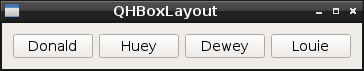
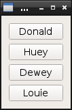
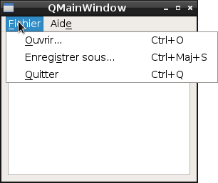
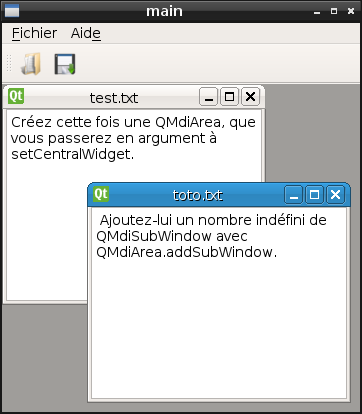

Introduction
Ce TP vise à vous faire développer avec la librairie Qt. Il poursuit les buts suivants :
-
Vous faire programmer en C++, qui est un langage orienté objet couramment utilisé. Oui, le C++ est plus « bas niveau » que d’autres langages que vous préférerez peut-être, comme Python, Java ou C#. Cependant, choisir de manière éclairée nécessite de connaître toutes les facettes d’une situation ; et dans le cas de la programmation cela signifie utiliser différents langages afin de pouvoir confirmer ses goûts ou préférences.
-
Vous faire connaître Qt, qui est une des principales librairies d’interface graphique existantes.
-
Les concepts de Qt sont utilisés de manière similaire par la majorité des API graphiques ; de plus, Qt offre des bindings avec de nombreux langages de programmation. Les connaissances que vous allez acquérir vous profiteront donc même si vous utilisez d’autres technologies -à divers degrés, bien évidemment.
-
Qt ne se limite cependant pas aux IHM : elle propose aussi des composants audio, video, réseaux, de base de données, etc. Une « grosse » API qui fait plein de choses différentes, on peut voir cela comme un avantage ou un inconvénient. Cependant, cela signifie que vous pouvez rencontrer Qt dans bien d’autres contextes que les IHMs.
De la même manière que, dans votre future carrière, vous aurez probablement à découvrir et à apprendre certaines technologies vous-même, le principe de ce TP est de vous laisser découvrir Qt à votre rythme. Il ne vous imposera pas de cadre strict. S’il vous propose de construire différents éléments d’IHM dans un ordre pédagogique, ne vous sentez pas limité par cet ordre, et explorez au fur et à mesure de vos envies ou intérêts !
|
Note
|
Ce TP part du principe que vous utilisez les stations de travail de la fac. Vous pouvez évidemment utiliser votre propre machine, mais c’est dans ce cas à vous d’assurer vous-même sa configuration (installation des librairies manquantes, config de votre IDE, …). En effet, je dois consacrer mon crénau de TP à enseigner l’IHM au maximum d’entre vous, pas à regler vos problèmes de Windows ou la config de votre distro Linux. C’est votre environnement de travail, c’est à vous de le gérer ! |
Documentation
-
Vous recherchez une classe particulière ? Visitez la liste des classes, CTRL+F l’expression que vous recherchez. Pareil pour la liste des fonctions.
Outre les habituelles descriptions de champs et méthodes de chaque classe, je vous invite à faire attention, dans le tableau en haut de la page, à la ligne « Header », qui vous permet de connaître l’include dont vous avez besoin, ainsi qu’à la ligne « qmake », qui vous permet de connaître le module que vous avez besoin de rajouter à votre fichier projet (voir section suivante). -
Liste d’emojis ridicules utilisés dans ce TP.
-
Davantage d’explication sur les signaux et slots (exercice 6).
Build
Vous avez étudié les makefile durant vos études ? Vous en conservez un excellent souvenir ⸮ Tant mieux !
Qt propose en effet un utilitaire nommé qmake, qui vous permet de générer automatiquement un fichier Makefile adapté à la configuration que vous décrivez dans un fichier projet, porteur de l’extension .pro.
Cela vous permet de ne pas avoir à vous préoccuper de détails comme l’odre de compilation, les flags de compilation, etc.
Votre workflow est donc le suivant :
-
Créez un fichier
nomdevotreappli.pro. -
Renseignez dans ce fichier des directives génériques, comme le nom des fichiers sources de votre application à compiler, les modules Qt dont vous avez besoin, et ainsi de suite.
-
Exécutez
qmake. Remarquez qu’un fichierMakefilea été créé. -
Exécutez
make. Si la compilation passe, les fichiers objet ainsi qu’un exécutable (à priori nomménomdevotreappli) ont été créé. -
Vous n’avez plus qu’à exécuter votre programme.
Notez que qmake n’est pas uniquement là pour vous éviter d’avoir à écrire un fichier makefile.
En fait, ce makefile est créé uniquement car vous êtes sur un système UNIX.
Pour aller plus loin à la fin de ce TP, essayez qmake sur un autre OS, et il vous créera ce qu’il faut pour compiler votre application Qt sur cet autre plateforme.
Pour débuter ce TP, je vous conseille de mettre le code source de votre application dans un fichier (par exemple main.cpp) que vous créez dans votre répertoire de travail, et de créer dans ce même répertoire un fichier projet (par exemple main.pro).
Vous créerez bien évidemment d’autres fichiers sources au fur et à mesure des besoins, et mettrez de temps à autre votre fichier projet à jour (en fait, chaque fois que vous créerez un nouveau fichier source ou utiliserez un objet issu d’un nouveau module Qt : dans ce cas, n’oubliez pas de relancer la commande qmake pour re-générer votre makefile !).
En attendant, voici des fichiers minimaux, histoire de débuter rapidement.
QT += widgets
SOURCES += \
main.cpp#include <QApplication>
int main(int argc, char *argv[]) {
QApplication app(argc, argv);
// c'est ici que vous allez commencer à bosser !
return app.exec();
}Exercice 1 : Base
Créez la fenêtre suivante :
Exercice 2 : Infobulles
Créez la fenêtre suivante :
Exercice 3 : Polices
Créez la fenêtre suivante :

Exercice 4 : Icônes
Créez la fenêtre suivante :

L’image que j’ai utilisé est celle-ci  , mais vous pouvez bien évidemment en utiliser une autre.
, mais vous pouvez bien évidemment en utiliser une autre.
|
Note
|
Pour que l’image s’affiche correctement, placez-là dans le répertoire courant de votre application. Si ça ne suffit pas, indiquez le chemin absolu vers l’image dans votre code.
Vous pouvez obtenir le répertoire courant avec |
Exercice 5 : Refactor
Si vous vous êtes jusque là contenté de compléter les fichiers de base donnés dans l’introduction, c’est le bon moment pour remanier votre code.
En effet, comme vous devez vous en douter, vous ne pourrez décemment pas construire d’application Qt complexe en jetant toute votre IHM et son fonctionnement dans un main().
En conséquence, créez une nouvelle classe C++ qui représentera la fenêtre principale de votre application.
-
Elle doit hériter de
QWidget. -
Un de ses champs doit être votre bouton.
-
Dans son constructeur, créez votre bouton et n’oubliez pas de l’ajouter à votre fenêtre ; par exemple, regardez les arguments de constructeur de
QPushButton. -
N’oubliez pas non plus de créer son destructeur, qui détruira votre bouton.
Étant donné que vous rajoutez un nouveau fichier, n’oubliez pas de compléter votre fichier projet et de réinvoquer qmake !
Au final, votre fenêtre devrait ressembler à celle-ci :

Exercice 6 : Signaux & slots
Cet exercice est destiné à vous faire découvrir une des fonctionnalités les plus importantes de Qt : les signaux et les slots. Expliqué de manière conçise :
-
un signal est un événement qui peut survenir sur un élement de l’IHM : le fait d’être cliqué, d’avoir sa valeur changée, etc.
-
un slot est une fonction de callback qui peut être invoquée dans des circonstances particulières, en particulier lorsqu’un signal est émis.
L’utilité de base est de pouvoir connecter un signal à un slot, à l’aide de la fonction statique connect. On peut bien évidemment lier plusieurs slots à un même signal. On peut aussi lier un signal à un autre signal.
À titre d’illustration, essayez de créer une fenêtre comportant un simple QPushButton, libellé « OFF ».
Lorsque vous cliquez sur ce bouton, il doit afficher « ON ».
Lorsque vous cliquez à nouveau, il doit ré-afficher « OFF », et ainsi de suite.
Pour ce faire, connectez le bon signal émis par votre bouton à une fonction slot sans argument correctement déclarée dans votre fenêtre (ou votre bouton, si vous créez une classe spécifique héritant de QPushButton qui représentera votre bouton).
Quelques recommandations pour que la connexion signal - slot fonctionne correctement. Il faut :
-
que le ou les objets à connecter implémentent la macro
Q_OBJECT; -
que, si
Q_OBJECTest dans un fichier.h(ce qui est à priori le cas), ce.hsoit ajouté à la variableHEADERSde votre fichier.pro; -
que vous ayiez réinvoqué
qmakeaprès les étapes 1 et 2 ; -
que la fonction slot soit déclarée comme 'public slots:' : il s’agit d’une nouvelle section de classe propre à Qt, qui s’utilise de la même manière que les sections
public:ouprivate:, habituelles en C++ ; -
que l’appel à QObject::connect soit correct.
Exercice 7 : Dialogs
Faites en sorte que, lorsque l’utilisateur appuie sur le bouton de votre simple fenêtre, un boîte de dialogue de confirmation apparaisse :

Exercice 8 : Internationalisation (système)
Les boîtes de dialogues permettent de recueillir la réponse de l’utilisateur à une question simple. Affichez une telle boîte de dialogue (type « Oui|Non ») lorsque l’utilisateur appuie sur un bouton.

Attention, le texte de votre boîte de dialogue est en français, et les libellés des boutons doivent l’être aussi !
Pour cela, utilisez un QTranslator qui chargera toutes les traductions déjà gérées par Qt.
Exercice 9 : Internationalisation (application)
À partir de l’exercice précédent, assurez-vous de supporter au moins deux langues dans votre application ; par exemple, le français et l’anglais.
Pour cela, il vous faut gérer des fichiers de traduction (un par langue), qui référençeront tous les libellés spécifiques à votre application.
Il est conseillé de ranger ces fichiers de traduction dans un dossier à part, nommé par exemple i18n.
-
Mettez à jour la target
TRANSLATIONSdans votre fichier projet. -
Marquez tous vos libellés applicatifs à traduire en utilisant la méthode
QWidget::tr(). Alternativement, vous pouvez aussi utiliser un appel statique du genreQMessageBox::tr(). -
Générez les fichiers de traduction
.tsgrâce à l’utilitairelupdate:
lupdate [-verbose] main.pro -
Compléter vos fichiers
.tsà la main (ce sont de simples fichiers XML) ou grâce à l’interfacelinguist. Par exemple :linguist i18n/*.ts -
Générez les fichiers de langue
.qmgrâce à vos fichiers.ts. Cela peut se faire grâce à linguist ou à la commande suivante :
lrelease main.pro
Exercice 10 : Pickers
Qt propose tout un assortiment de boîtes de dialogues « toutes faites » pour saisir différents types de valeur. Explorez les différentes possibilités :


D’autres exemples, plus complexes, incluent QFont::getFont ou encore QColorDialog::getColor.
Essayez-les, en vous entrainant à récupérer et à réutiliser la valeur à chaque fois !
Exercice 11 : Fichiers
Un autre exercice relativement important consiste à savoir gérer l’ouverture et la sauvegarde de fichiers. Par exemple, créez une interface qui permet à l’utilisateur :
-
d’ouvrir un fichier texte avec
QFileDialog::getOpenFileName; remarquez le paramètre de filtrage selon l’extension. -
de le modifier dans un champ de texte ; par exemple, un
QTextEdit. -
de sauvegarder la version modifiée comme un fichier différent avec
QFileDialog::getSaveFileName.
Vous pouvez aussi jeter un coup d’œil du coté de QFileDialog::getExistingDirectory.
Exercice 12 : Layouts
Le meilleur moyen de disposer plusieurs éléments dans une fenêtre est d’utiliser des Layouts. Qt en propose plusieurs types, qui permettent de disposer correctement les éléments les uns par rapport aux autres.
Le processus est toujours le même : on ajoute les éléments à une layout, puis on ajoute la layout à la fenêtre. Évidemment, une layout peut elle-même être ajoutée à une autre layout -c’est même le seul moyen de construire une fenêtre complexe proprement.
Les principaux types de layout sont au nombre de quatre : QVBoxLayout, QHBoxLayout, QGridLayout et QFormLayout.
Explorez-en les possibilités individuellement, puis combinez-les pour construire une fenêtre complexe !



Exercice 13 : Fenêtre principale
QMainWindow sert le plus souvent pour créer la fenêtre principale d’une application.
En effet, cette classe permet de simplifier la gestion, entre autres :
-
de la barre de menu (celle qui comporte en général les choix «Fichier», «Édition», «Aide», etc)
-
de la barre d’outils (des raccourcis vers les outils en général sous forme d’icônes placés sous la barre de menu)
-
de la barre de statut (servant en général à afficher des informations textuelles de statut, tout en bas de la fenêtre)
Une QMainWindow est aussi caractérisée par une zone de travail centrale, qui peut gérer soit un seul document, soit plusieurs comme nous le verrons dans l'exercice 16.
En reprenant ce que vous avez fait dans l'exercice 11, adaptez votre code de manière à utiliser QMainWindow.
Le contenu du fichier texte, ainsi que les boutons d’ouverture et de sauvegarde sont pour l’instant à afficher en zone centrale.
Exercice 14 : Menus et actions
Retirez les deux boutons servant à ouvrir et à enregistrer un fichier de la zone de travail de votre fenêtre.
À la place, créez une barre de menu (QMenuBar) incluant différent menus (QMenu) incluant à leur tour différentes actions (QAction).
Par exemple, vous pouvez créer :
-
un menu Fichier, permettant :
-
d'Ouvrir un fichier
-
de l'Enregistrer sous un nouveau nom
-
de Quitter l’application
-
-
un menu Aide, permettant
-
de changer la langue de l’application
-
d’afficher le sujet du TP sous forme d'Aide en ligne (jetez un coup d’œil du coté de
QDesktopServices.openUrl) -
d’obtenir des infomations À propos de l’application ou de son développeur via une boîte de dialogue dédiée
-
Il est évidemment possible, et même conseillé, d’affecter des raccoucis claviers aux différentes actions de votre application grâce à QAction.setShortcut(QKeySequence).
N’oubliez pas que vos menus doivent être traduits en plusieurs langues, et que cette internationalisation doit prendre en compte les raccourcis clavier !


Exercice 15 : Barre d’outils
Ajoutez une barre d’outils (QToolBar) à votre application.
Cette barre d’outils doit contenir au moins deux commandes : Ouvrir et Enregistrer.
Vous réutiliserez les QActions que vous avez créées à l’exercice précédent pour implémenter les commandes.
Une barre d’outils rassemble en général les commandes sous forme d’icônes.
Il est possible d’affecter une icône à une action de la même manière qu’à n’importe quel widget (voir Exercice 4).
Pour un rendu cohérent, vous pouvez réutiliser les icônes système grâce à QIcon.fromTheme et à la documentation de ce TP.

Hormis des QAction, vous pouvez aussi rajouter tout type de widget spécifique à votre barre d’outils (par exemple une zone de texte qui servira de barre de recherche, une combobox qui servira de sélecteur de mode, etc), de même que des separateurs (avec QToolBar.addSeparator).
Exercice 16 : Documents multiples
La zone de travail centrale de votre QMainWindow fonctionnait jusqu’ici en mode « SDI » (ou Single Document Interface).
Mais vous pouvez aussi gérer plusieurs documents à la fois en fonctionnant en mode « MDI » (ou Multiple Document Interface).
Pour cela, il suffit de remplacer votre widget central actuel par une QMdiArea.
Modifiez votre programme de manière à pouvoir ouvrir, modifier et sauvegarder un nombre indéfini de fichiers en même temps.

Exercice 17 : Affichage web
|
Note
|
Cet exercice part du principe que la machine sur laquelle vous travaillez a les bonnes dépendances installées.
En particulier, sur une distribution basée sur Debian, la dépendance nécessaire est le paquet |
Il est possible d’afficher une interface web au sein même d’une fenêtre Qt.
-
Définissez une instance de
QWebViewen tant que zone de travail centrale de votreQMainWindow. -
Retirez l’action d’enregistrement de votre barre d’outils ainsi que de votre barre de menu.
-
Rajoutez une
QLineEditainsi qu’unQPushButtonà votre barre d’outils. -
Modifiez votre programme de manière à ce que :
-
votre action d’ouverture de fichier permette d’afficher le contenu d’un fichier
.htmlou.htmdans votre zone centrale ; -
en saisissant une URL dans votre
QLineEdit, puis en appuyant sur la touche Enter ou sur votreQPushButton, la page web correspondante soit affichée.Ces deux actions peuvent se réaliser grâce à la méthode
QWebView.load.
-
Pour utiliser QWebView, il vous faut ajouter le module suivant à la target QT de votre fichier projet :
QT += webkitwidgets